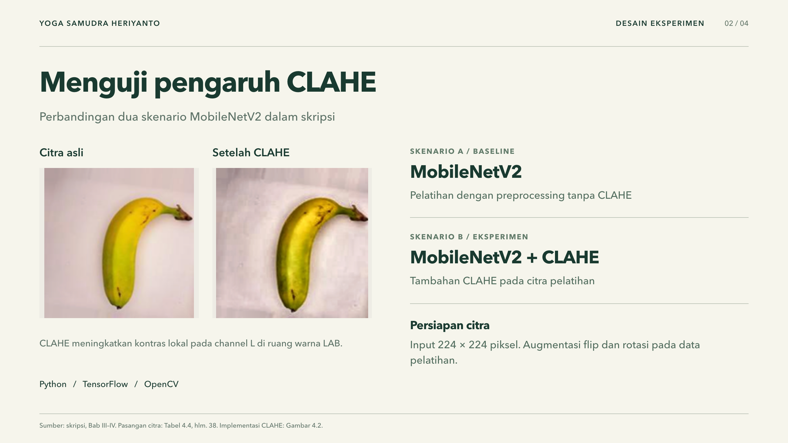
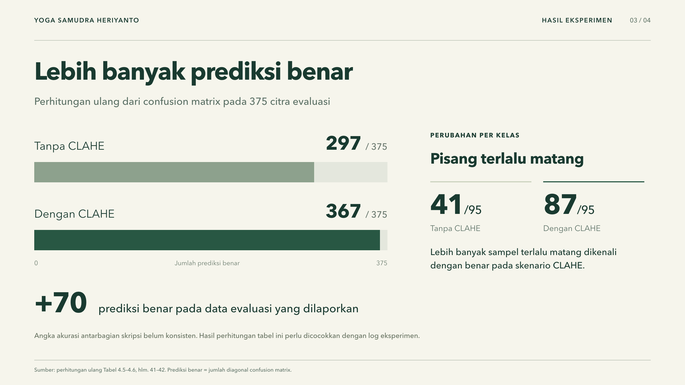
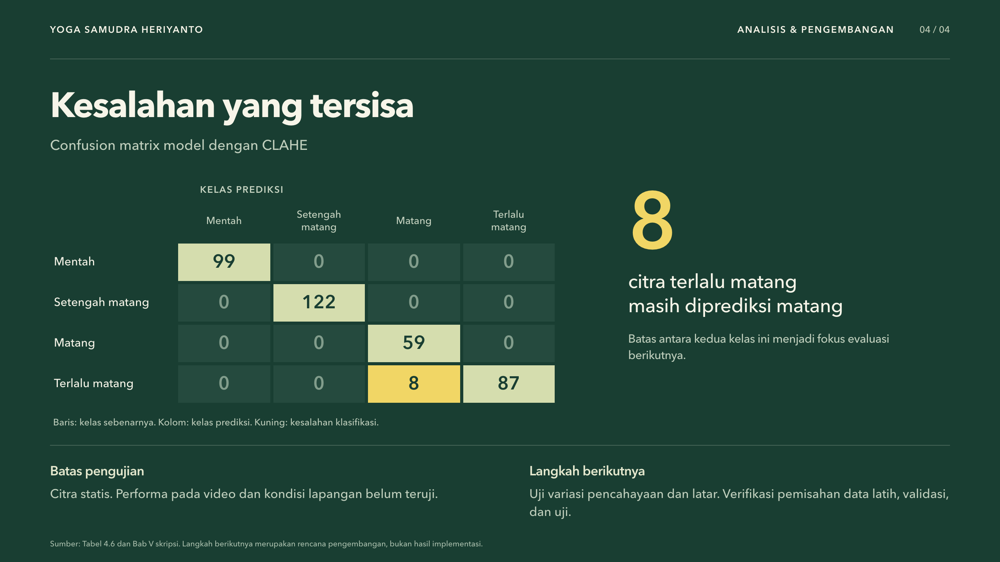

Prepare the dataset
Organize four ripeness labels, resize every image, and create train and evaluation inputs.
COMPUTER VISION · UNDERGRADUATE THESIS
A four-class image classification study using MobileNetV2 transfer learning, with an experiment to measure how CLAHE preprocessing affects model performance.

Research documentation
Four concise visuals explain the research question, experiment, results, and the classes that remained difficult.



Research pipeline
The study began with approximately 1,800 banana images grouped into four stages: unripe, half-ripe, ripe, and overripe. Images were resized to 224 × 224 pixels, then augmented with flips and rotations to improve variation during training.
MobileNetV2 was used as the convolutional neural network backbone through transfer learning. Two pipelines were trained and evaluated: a baseline using the original images, and a second pipeline using CLAHE on the L channel in LAB color space.
The models were compared through predictions and confusion matrices. The analysis focused on overall classification behavior and the overripe class, where visual similarities made errors easier to observe.
What I built
The workflow covers data, preprocessing, model training, and evaluation.
Organize four ripeness labels, resize every image, and create train and evaluation inputs.
Apply local contrast enhancement on the luminance channel while preserving color information.
Use a pretrained CNN backbone to learn the visual differences between ripeness stages.
Compare confusion matrices and review which adjacent ripeness stages the model confuses.
Research stack
A compact stack for reproducible computer vision work.